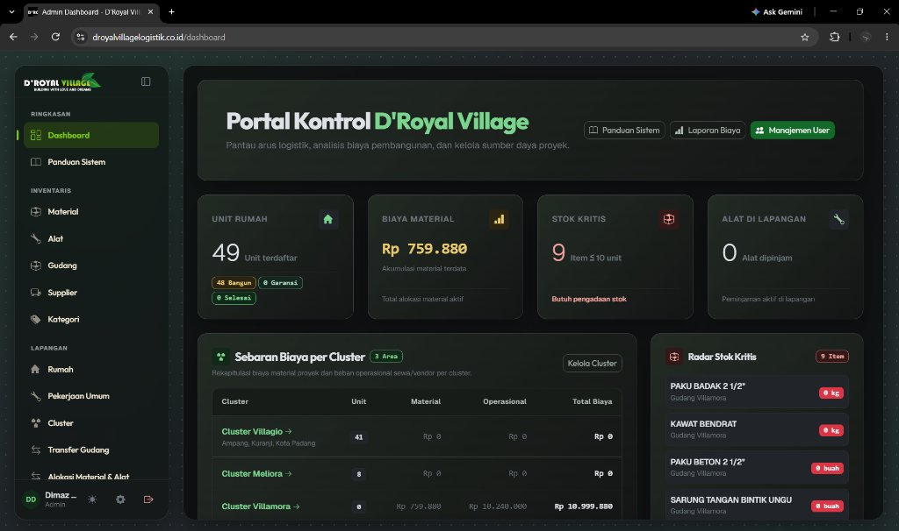

D'Royal Village: Sistem Logistik & Pengendalian Biaya Proyek
Merancang, membangun, dan men-deploy Sistem Informasi Logistik dan Pengendalian Biaya Proyek berbasis web untuk developer perumahan D'Royal Village. Menggantikan proses manual dan spreadsheet Excel dengan sistem multi-gudang dan multi-cluster terpadu yang memonitor realisasi fisik unit rumah secara real-time.

Integritas Database Transaksi ACID
Menjamin tidak ada mutasi stok gantung atau stok minus ketika multi-mandor mengajukan material secara serentak, didukung mekanisme rollback otomatis jika terjadi kegagalan sistem.
Inventaris Batch Harga & Beban Unit
Valuasi material dihitung per batch harga pembelian secara presisi (tanpa dirata-rata). Biaya pemakaian dibebankan langsung ke unit rumah sehingga selisih anggaran RAB terpantau akurat.
Pertanggungjawaban Alat & Biaya Cluster
Alur penyelesaian unit rumah mewajibkan verifikasi status fisik alat (baik, rusak, hilang). Biaya sewa alat berat dan fasilitas bersama (drainase, listrik) dicatat terpisah pada beban cluster.
Otorisasi Multi-Peran (RBAC) & Migrasi Excel
Pemisahan wewenang antara Logistik, Pengawas (Mandor), dan Manajemen Keuangan. Dilengkapi modul importir Excel khusus untuk migrasi saldo awal data historis perusahaan.